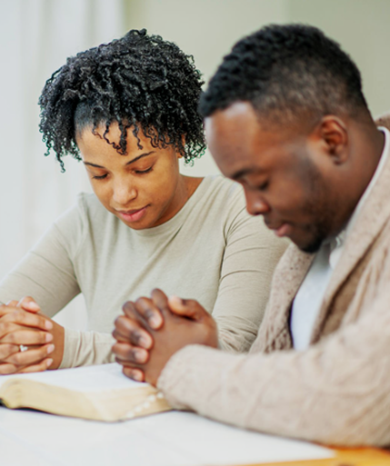

Program Overview
Parish-based marriage Preparation and formation program
Better & For Ever® is a parish-based marriage preparation and formation program designed to help couples prepare for—and sustain—lifelong Christian marriage through dialogue and interaction with a trained sponsor couple.
Rooted in Catholic teaching and aligned with Canon Law, the program supports couples before engagement, during engagement, and after the wedding, while equipping parishes and dioceses with a practical, sustainable model for marriage ministry.
What Makes For Better & For Ever® Different
Rather than relying on classroom-style instruction or one-time programs, For Better & For Ever® centers on relationship formation through conversation and accompaniment.
At the heart of the program is a couple-to-couple model in which trained married couples—known as Sponsor Couple®teams —walk alongside engaged couples through a structured process of reflection, dialogue, and follow-up.
- Treats marriage as a vocation, not an event
- Emphasize skills that must be learned and practiced
- Recognizes the influence of family of origin and personal history
- Extends pastoral care beyond the wedding day
For Better & For Ever® is designed to serve:
- Single and dating adults discerning readiness for marriage
- Engaged couples preparing for sacramental marriage
- Newly married couples navigating the early years of marriage
- Married couples serving as Sponsor Couples team
- Clergy, parishes, and dioceses responsible for marriage formation
While the program is rooted in Catholic theology, it is adaptable for interchurch,interfaith, and couples of other faith backgrounds, with multiple editions available to meet pastoral needs.

How the Program works:
Formation Through Dialogue
Couples use the For Better & For Ever® workbook to reflect individually, share responses with one another, and engage in guided conversations with their Sponsor Couple team. Topics include communication, family of origin, faith, finances, sexuality, conscience, and marital spirituality.